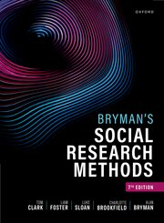

I am a UK-based sociologist specializing in social science research methods, the sociology of (extreme) deviance, and extraordinary belief systems. My work focuses on making complex sociological ideas accessible and engaging for students, researchers, media audiences, and the general public.

Methodology & PedagogyDemystifying social research methods and designing innovative, active-learning curricula for higher education.
Investigating the social construction of evil, notorious criminal cases, and historical prison archives.
Exploring how society constructs and manages beliefs in the supernatural, satanic narratives, and folklore.
Translating complex sociological insights for national press, radio, and television documentaries.
I am available for media commentary, podcast guesting, guest lectures, and educational consultancy.
Get in touch: tom@hellotomclark.com